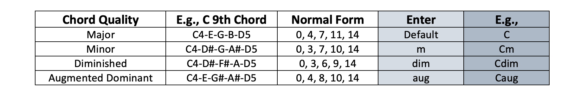
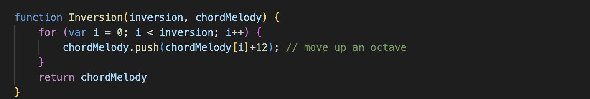

Computer science and music both depend on a system of notations, which is created to facilitate structured communication within its domain.
Thanks to the class Computational Sound, offered in the department of CS at Barnard Collage, we’ve learned to perform and implement with live coding environments. For this project, I aimed to continue this and design a live coding language that employs the collection of musical symbols in the realm of music.

Figure 1: What's in Interface
The Interface(figure 1) has a text area where allows user to enter a space-separated list of musical symbols. Each unit requires the features: Root+Chord+Scale, e.g., Cm9(C minor 9th) or A7(A major 7th). There are some other options following the structure: Beats@Root+Chord+Scale’Inversion[Loop], e.g., 4@Cm9(note length of 4), Cm9’1(first inversion), or Cm9[2](Repeats twice). I will walk you through the details later. Under the text area, there is a slider changing the tempo of the music. User can also select a waveform and at least one envelope(s) of the oscillating signal. Remember to adjust the parameters before clicking “Play”!
As I mentioned, the required features of each unit are Root, Chord, and Scale.
Root is a root key. The availble root keys are C, C#, D, D#, E, F, G, G#, A, A#, B.
Figure 2: Piano Octave
Chord is the chord quality. The available qualities are Major, Minor, Diminished, Augmented.
Figure 3: Chord Symbols
Scale starts at the root and counts up until nth degree.

Figure 4: Scale Symbols
The optional features are Beats, Inversion, and Loop.
Beats is the note length, included by entering a positive integer with @. E.g., 2@.

Figure 5: Suggested beats
Inversion is made by moving first n note(s) up by an octave, included by entering a positive integer with '. E.g., '2.
Figure 6: Inversion Symbols
Loop is how many time the unit will be played, included by entering [n], e.g., [2] means to play twice.
I used string.at() to detect if the optional features are added within each unit. If code.at(1), which is the second character, is @, then beats is entered. If code.at(-1), which is the last character, is ], then loop is entered. Then I used string.split("[") to split the code into two substrings, ["Beats@Root+Chord+Scale'Inversion", "[Loop"]. If the firstSubstring.at(-2), which is the second to last character, is ', then inversion is entered. Using string.split() and string.slice(), the values of Beats, Loop, Inversion can be obtained
What remains is Root+Chord+Scale, and its last character is the degree number. The formula below(figure 7) is used to convert the degree of the scale into the number of notes. For instance, if the scale degree = 5, then (5+1)/2 = 3, which means there are 3 notes within the scale.
Figure 7: Degree Conversion
Now we finally get to the core: Root+Chord! Remember that a major chord has no symbol, a minor chord has the symbol of "m", a diminished chord has the symbol of "dim", and an augmented chord has the symbol of "aug". Use string.at() to check the chord quality, and string.slice() the chord symbol, which helps us obtain the root key.
According to the "noteToPitch" map (figure 8), the root key is mapped onto the corresponding pitch value.
Figure 8: The Note to Pitch Map
Given the corresponding scale for the chord quality (figure 9) and the number of notes, a for loop is utilized to map every note within the scale onto right pitches. Then the pitch list is obtained.
Figure 9: Scales for four chord qualities
Figure 10: Example of mapping a minor chord
As we get the pitch-list, we start doing inversion. Take the value of inversion as i, and move the 1st ... ith note up by adding 12 to the pitch value, which is an octave. Lastly, slice the first i element(s) and the inverted pitch-list is returned.
Figure 11: Inversion Operation
What's also worth mentioning is the envelopes. Three envelopes are available: Default, ADSR, and DAHDSR. You will enjoy a more complex and variable modulation if you select more than one envelopes. If so, the envelope of every input unit will be randomly selected.
DEFAULT: Abrupt, Rough and Staccato
This envelope provides less nuanced response. It reaches to maximum level immediately and drops back to the minimum, without a sustain stage
Figure 12: Default Envelope
ADSR: Rich, Sustained, and Strong
This four-stage envelope is the most common one. It ramps linearly up to the maximum level, decays a little lower, and gradually goes into a quieter sustain stage. It remains at the defined sustain level for a while, so the sound is more consistent and gradational.
Figure 13: ADSR Enveliope
DAHDSR: Well-shaped, Soft, Lilting
This envelope has an addtional decay stage before attack, letting it starts gentle. There is a hold stage after attack, which allows it to stay at the maximum level for a fixed period of time, and it then decreases to the second decay stage. The rest is similar to ADSR.
Figure 14: DAHDSR Envelope